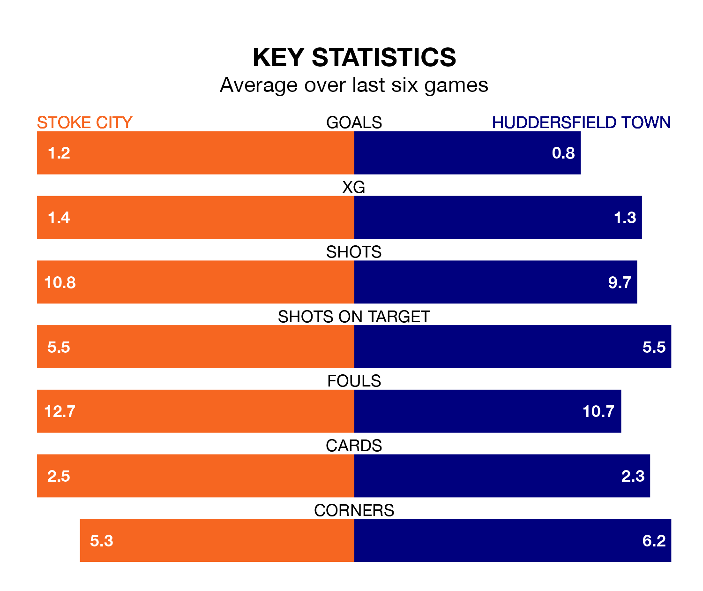

Huddersfield Town travel to the bet365 Stadium looking to secure a first win in six EFL Championship games against Stoke City on Monday.
The Terriers have lost three and drawn two matches since they last earned three points – against Watford on February 24.
They face a Stoke side who have won three and lost two over that time.
Huddersfield are 22nd in the table after 39 games, of which they have won eight and drawn 15, earning 39 points.
Stoke are five places ahead of Town in 17th, with 12 wins and eight draws putting them on 44 points.
In the last 10 years, Stoke and Huddersfield have played each other on 12 occasions. Stoke won six of them, Huddersfield two, and they drew four times.
On average, the Potters scored 2.0 goals and the Terriers 1.2 in those matches.
Their last meeting was on September 20, when they played out a 2-2 draw.
With 37 goals in 39 games so far this season, City are scoring at below the league average rate with 0.9 goals per game. And they are conceding at an average rate, letting in 53 goals at a rate of 1.4 per game.
The Terriers are also below average scorers, with 1.1 goals per game, compared to a league average of 1.4. They have conceded 1.6 goals per game.
Stoke's last match was on Friday, a 2-0 win against Hull City, with Josh Laurent and Ki-Jana Hoever getting the goals for the Potters.
Huddersfield lost 3-1 against Coventry City last time out, also on Friday.
Monday's match will be refereed by Rebecca Welch, who has taken charge of nine EFL Championship games so far this season, issuing one red card and booking 42 players. He has not awarded any penalties.
The last Huddersfield game Welch refereed was the 2-1 loss at home against Hull City on February 17. He is yet to oversee a match featuring Stoke this season.
Updated: 10:31 (UTC), 31/03/24